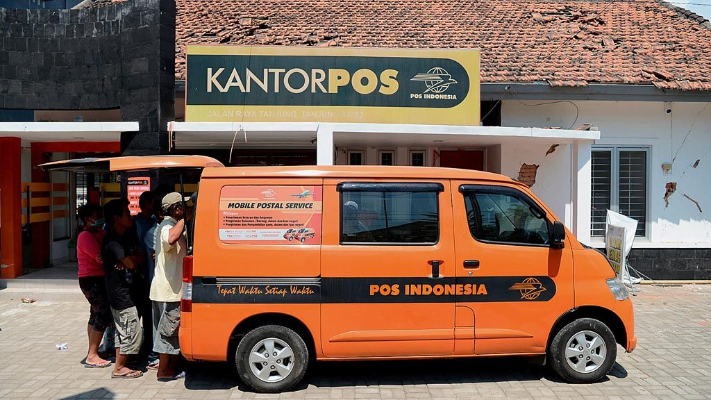

PROFIL CABANG
Kantor Cabang Indonesia di Sei Putih Timur merupakan entitas yang beroperasi sejak tahun 2020. Sejak awal berdirinya, kami telah berkomitmen untuk melayani segala kebutuhan pelanggan, baik dari usaha kecil maupun besar. Dengan fokus pada pelayanan yang berkualitas dan solusi yang tepat, kami menjadi mitra terpercaya bagi pelanggan di wilayah ini.
Kantor cabang kami berupaya memberikan dukungan yang komprehensif kepada pelanggan dalam pengembangan dan pertumbuhan bisnis mereka. Kami memahami bahwa setiap pelanggan memiliki kebutuhan unik, dan kami siap memberikan solusi yang disesuaikan untuk memenuhi tuntutan bisnis mereka.
Selain itu, kami memahami pentingnya kemitraan jangka panjang dan hubungan yang berkelanjutan. Oleh karena itu, kami selalu berusaha untuk menjaga transparansi, integritas, dan profesionalisme dalam setiap interaksi dengan pelanggan kami.
Dengan tim yang berdedikasi dan berpengalaman, kami siap memberikan layanan terbaik untuk mendukung kesuksesan dan pertumbuhan bisnis pelanggan kami. Apapun skala bisnis Anda, kami siap menjadi mitra yang handal dan membantu mewujudkan tujuan bisnis Anda di wilayah Sei Putih Timur dan sekitarnya.
DOKUMENTASI

INFORMASI
PT Pos Indonesia Masih Kejar 29 Aset Perusahaan yang Dikuasai Pihak lain
Jakarta - PT Pos Indonesia (Persero) masih berupaya mengembalikan 25-29 aset perusahaan yang dikuasai oleh pihak ketiga. Dalam upaya mengambil aset tersebut, perusahaan menggandeng Kejaksaan Agung.
"Kita masih ada 25-an lagi yang masih dalam proses, sampai dengan 29 aset," kata Direktur Keuangan dan Manajemen Risiko, Pos Indonesia, Endy Pattia Rachmadi Abdurrahman di Hotel Raffles, Jakarta Selatan, Senin (19/2/2024).
Dia menerangkan, aset-aset yang dikuasai oleh pihak ketiga tersebut biasanya gedung dan tanah. Untuk aset yang tengah dikejar saat ini rata-rata berada di luar Jawa.
Pos Indonesia Kolaborasi Optimalkan Layanan Jasa dan Pengembangan Usaha
JAKARTA - PT Pos Indonesia (Persero) atau PosIND , dan PT Indonesia Comnets Plus menandatangani nota kesepahaman terkait Rencana Kerja Sama Optimalisasi Layanan Jasa dan Sinergi Pengembangan Usaha, di Bandung, Jawa Barat, Rabu (21/2) lalu. Kesepakatan tersebut untuk mengoptimalisasi layanan jasa dan pengembangan usaha. "Tujuan dari kerja sama ini yaitu terkait pembahasan dan diskusi rencana optimalisasi layanan jasa, dan sinergi pengembangan usaha agar saling memberi manfaat bagi kedua pihak dengan tetap memperhatikan ketentuan hukum yang berlaku di Indonesia. Termasuk prinsip-prinsip Good Corporate Governance (GCG)," kata Direktur Bisnis Jasa Keuangan Pos Indonesia Haris dalam siaran pers, Jumat (1/3/2024).
Bangun Taman Kenangan di Bengkulu, Wujud Kontribusi Pos Indonesia
BENGKULU - Pj Wali Kota Bengkulu Arif Gunadi meresmikan Taman Kenangan, Senin (12/2/2024). Peresmian taman yang berada di depan Masjid Jamik, Kota Bengkulu tersebut dilakukan Arif bersama PT Pos Indonesia (Persero). Arif Gunadi berterima kasih kepada Pos Indonesia atas dedikasi perusahaan dalam membangun Taman Kenangan itu. Termasuk mengabadikan nama-nama wali kota dan wakil wali kota Bengkulu di taman tersebut.